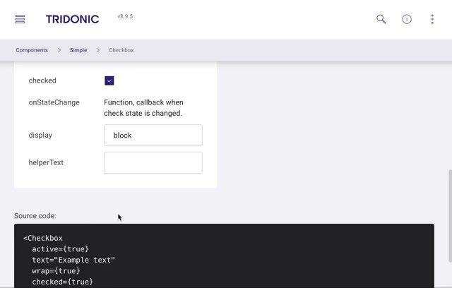
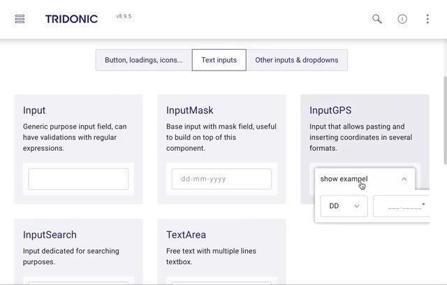
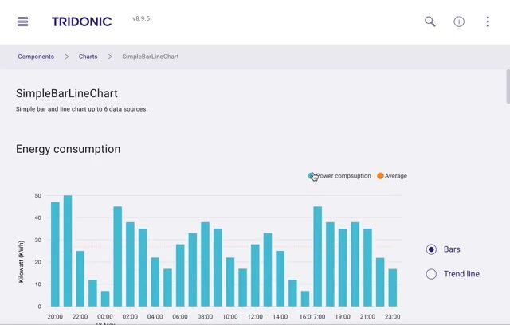
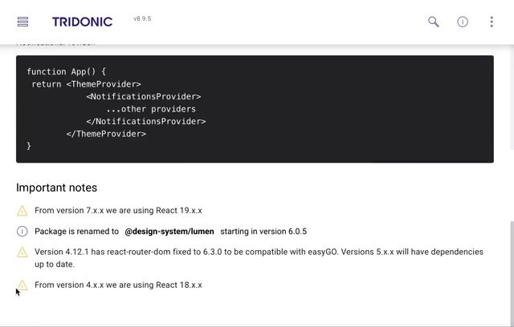

Tridonic Design System: a design system run as a product.
One shared, versioned system in place of more than 200 one-off components across 15 apps. I defined its vision, strategy and roadmap, and led its design.
Role
Design system lead: product and UX
Team
Designers and developers across Tridonic's IoT and lighting products, as contributors and as users
Duration
2019–2022
Outcome
~40% less development time and 90% fewer design inconsistencies. The library was still releasing in 2025.
The documentation site of the coded library: release notes, components and the energy chart. About one minute, no sound.
01
Context
Tridonic was expanding its portfolio of smart lighting and IoT software quickly, with separate teams building separate products.
Each team solved the same interface problems in its own way. The result was a fragmented experience for users and growing design and technical debt for the company.
02
Problem
An audit found more than 200 unique UI components across 15+ applications.
Designers spent about 20% of their time on manual consistency fixes.
Specs differed by team, and developers were frustrated with non-standard hand-offs.
Standardising was the way to cut development cost and time to market, and to scale with new products.
03
My role and what I owned
I ran the system as an internal product, with its own users, roadmap and return on investment.
Vision, strategy and roadmap for the Tridonic Design System.
Buy-in from business and engineering.
The audit of inconsistencies across Tridonic's products.
Research and design of the component library.
Adoption: promoting the system and working with the teams that used it.
04
Key decisions and trade-offs
Decision 1One source of truth, from Figma to code
Colour, type and spacing live as tokens generated from the Figma library into a React package on Tridonic's private registry. Every component page links back to Figma.
Chosen
A token pipeline, so a change reaches every product without a manual hand-off.
Rejected
A shared Figma file with written guidelines. Faster to set up, but design and code drift apart again.
Trade-off
A token pipeline takes longer to set up.

A component page: change a property, see the code.
Decision 2Build the parts only this domain needs
Generic buttons are easy to find anywhere. Lighting and IoT teams needed a GPS input for installations, a time picker with time zones, an energy chart and a canvas editor for floor plans.
Chosen
Domain components that teams couldn't build quickly alone: the reason to use the system instead of starting again.
Rejected
A thin, generic kit. Cheaper to maintain, and easy for teams to ignore.
Trade-off
More to maintain.

InputGPS: coordinates in any format.

Charts: energy consumption.
Decision 3Versions and release notes instead of a mandate
A design system has users, and they stay if they can trust it. Each release has a version and notes, with breaking changes stated up front.
Chosen
Treat adoption as a product problem: show the value, and make upgrades predictable.
Why
Versions, release notes and a Figma link on every component kept teams on the system more than any mandate would have.

Release notes: breaking changes stated up front.
05
Outcome
~40%
less development time on interfaces built with the library.
90%
fewer design inconsistencies, against the original audit.
25–35%
faster development of lichtMONITOR, which was built on the system.
Figures as reported internally at Tridonic, plus 25% faster onboarding for new designers and developers. The system started as TDS v1.1 in January 2021; in 2025 the coded library was at version 8.9.5, three years after I left.
06
What I'd do next
Measure adoption the way a product measures usage.
Track which products use which version, so the roadmap follows real demand.
Keep promoting it. Showing the value to each team did more for adoption than any rule would have.
Let's talk about your product.
I'm based in Porto and work remotely, hybrid or on site.